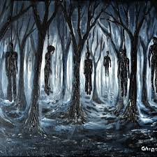

Padurea Spanzuratilor
L.Rebreanu
Informații generale | Ediția originală |
Autor | Gen |
Limba | Editura |
Tara primei apartii | Data aparitiei |
Format original |
Nr. de pagini |
Liviu Rebreanu | roman psihologic | română | Editura Cartea Românească |
Regatul României | 1922 | Tipăritură | 328 | |
Personaje
- Apostol Bologa - locotenent român, originar din Parva. Este fiul avocatului Iosif Bologa (urmaș al unui fruntaș din Răscoala lui Horea ce fusese tras pe roată și care a fost condamnat în procesul Memorandului și a făcut doi ani de închisoare) și al Mariei Hogea (fiică de medic, urmaș al unui subprefect din vremea revoluției lui Avram Iancu). A urmat studiile primare în satul natal, gimnaziul la Năsăud,
devenind apoi student la Facultatea de Filozofie a Universității din Budapesta.
- Otto Klapka - căpitan ceh, originar din Znaim, în vârstă de aproape 35 de ani.[8]:p. 9 A urmat școala de ofițeri, dar nu i-a plăcut viața militară, așa că a urmat apoi Facultatea de Drept și a profesat ca avocat. S-a căsătorit cu fata unui profesor și are cinci copii. Intenționează să dezerteze de pe frontul italian,
împreună cu alți trei ofițeri cehi, dar renunță dintr-o lașitate
- Varga - locotenent de husari, ofițer activ de etnie maghiară, nepotul profesorului de filozofie de la Budapesta. Este tânăr și îngâmfat și are ambiția să fie socotit un mare cunoscător de cai.
Bologa îl considera „gol și fudul”, dar cu „un suflet deschis și leal”
- Gross - locotenent evreu, inginer la o fabrică de mașini din Budapesta. Este adept al ideologiei socialiste și al teoriei revoluției mondiale. Comandă o companie de pionieri. Autorul îl descrie ca fiind „uscățiv, slăbit, cu barbișon retezat și cu ochii mici, negri, fulgerători (...). Vorbind, se aprindea repede,
iar vocea lui aspră, neplăcută, devenea mlădioasă și cuceritoare”.
- Cervenco - căpitan rutean, profesor la un liceu din Stanislau. Refuză să poarte armă din considerente religioase și afirmă că „mai bine și-ar tăia mâinile
decât să tragă asupra unor bieți oameni ca și dânsul”.